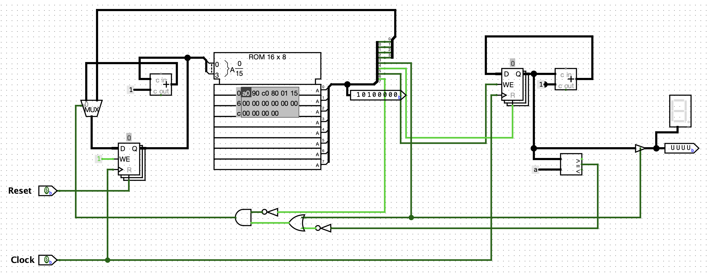
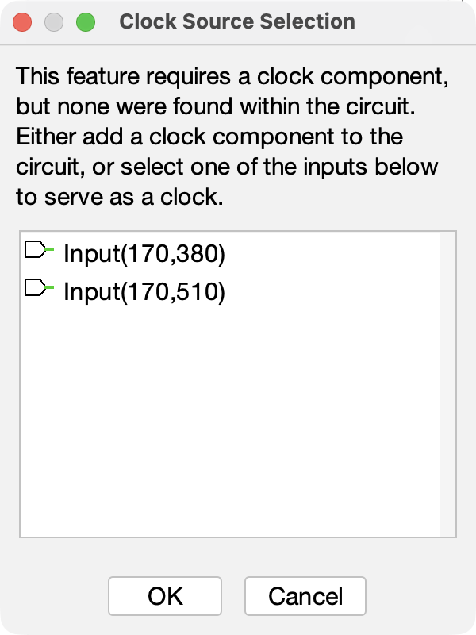
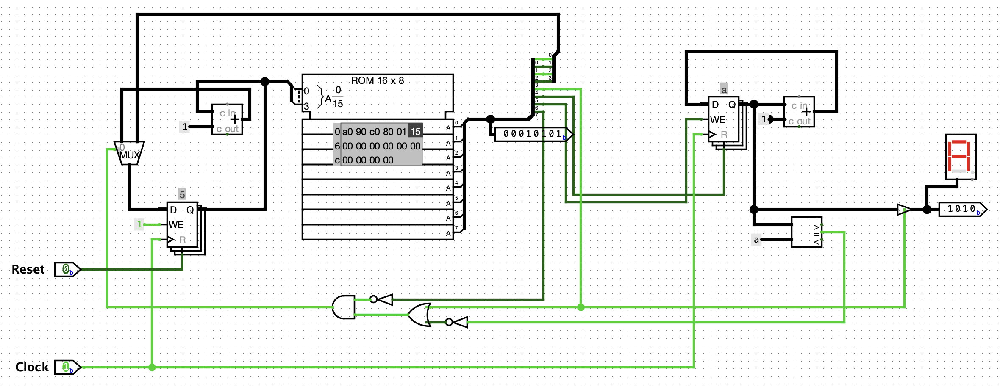

(Lab 1 : ROM as Control Store)
ด้วยโปรแกรม Logisim-Evolution
การออกแบบหน่วยควบคุมแบบ Microprogram (Microprogrammed Control Unit) ที่เก็บลำดับสัญญาณควบคุมไว้ใน ROM และขับเคลื่อนด้วย Microsequencer
| 1 | นายดรัณภพ พิทักษ์กิจไพศาล | 6710301007 |
| 2 | นายอภิสักก์ คงภักดี | 6710301009 |
| 3 | นายธนัท จงธีรธนโชติ | 6710301032 |
รายงานฉบับนี้เป็นส่วนหนึ่งของรายวิชา Embedded System Design ภาคการศึกษาที่ 1 ปีการศึกษา 2569 จัดทำขึ้นเพื่อนำเสนอผลการวิเคราะห์และทดสอบวงจร Lab 1 : ROM as Control Store บนโปรแกรม Logisim-Evolution ซึ่งเป็นการสร้างหน่วยควบคุมขนาดเล็กที่ใช้หน่วยความจำ ROM ทำหน้าที่เป็น “คลังคำสั่งควบคุม” (Control Store) แทนการต่อวงจรลอจิกควบคุมด้วย Gate แบบตายตัว อันเป็นแนวคิดพื้นฐานของการออกแบบหน่วยประมวลผลแบบ Microprogram
เนื้อหาภายในรายงานประกอบด้วยแนวคิดการออกแบบหน่วยควบคุมทั้งสองแนวทาง รายการอุปกรณ์ทั้งหมดที่ใช้ภายในวงจร รูปแบบของ Microinstruction ขนาด 8 Bit การทำงานของแต่ละส่วนโดยละเอียด ได้แก่ ส่วนลำดับที่อยู่ (MUX, µPC และ Adder) ตัวคลังคำสั่ง (ROM) วงจรถอดรหัส (Splitter) ตัวนับ (CNT) วงจรตัดสินใจกระโดด (Branch Logic) และส่วนแสดงผล ตลอดจนการถอดรหัสโปรแกรมที่บรรจุอยู่ใน ROM ตารางการทำงานทีละคาบสัญญาณนาฬิกาทั้ง 42 คาบ วิธีการทดลองในโปรแกรม และข้อสังเกตที่ควรระวัง
คณะผู้จัดทำหวังเป็นอย่างยิ่งว่ารายงานฉบับนี้จะเป็นประโยชน์แก่ผู้ที่สนใจศึกษาการออกแบบหน่วยควบคุมแบบ Microprogram หากมีข้อผิดพลาดประการใด คณะผู้จัดทำขออภัยมา ณ ที่นี้ และขอขอบพระคุณอาจารย์คทาเทพ สวัสดิพิศาล ที่ให้คำแนะนำตลอดการทำรายงานฉบับนี้
คณะผู้จัดทำ
ในหน่วยประมวลผลกลาง (CPU) ทุกชนิด หน่วยควบคุม (Control Unit) คือส่วนที่ทำหน้าที่สร้างสัญญาณควบคุมไปสั่งงานส่วนต่าง ๆ ของวงจร เช่น สั่งให้ Register โหลดค่า สั่งให้ ALU บวก หรือสั่งให้ตัวนับเพิ่มค่า การสร้างหน่วยควบคุมสามารถทำได้ 2 แนวทางหลัก ได้แก่ การต่อวงจรลอจิกด้วย Gate โดยตรง (Hardwired Control) และการเก็บลำดับของสัญญาณควบคุมไว้ในหน่วยความจำแล้วอ่านออกมาทีละคำ (Microprogrammed Control)
รายงานฉบับนี้นำเสนอผลการวิเคราะห์วงจร Lab 1 : ROM as Control Store ซึ่งเป็นหน่วยควบคุมแบบ Microprogram ขนาดเล็กที่ใช้ ROM ขนาด 16 × 8 Bit ทำหน้าที่เป็นคลังคำสั่งควบคุม โดยในทุกคาบสัญญาณนาฬิกา วงจรจะอ่านคำสั่งขนาด 8 Bit จาก ROM ออกมาหนึ่งคำ นำ 4 Bit บนไปใช้เป็นสัญญาณควบคุม และนำ 4 Bit ล่างไปใช้เป็นที่อยู่ปลายทางของการกระโดด จากนั้นจึงตัดสินใจว่าคำสั่งถัดไปคือ “ที่อยู่ถัดไป (PC + 1)” หรือ “กระโดดไปที่อยู่ปลายทาง”
โปรแกรมที่บรรจุอยู่ใน ROM ทำหน้าที่นับเลขตั้งแต่ 0 ถึง 10 แสดงผลบนจอแสดงผล 7-segment แบบเลขฐานสิบหก แล้วหยุดค้างที่ค่า A (เท่ากับ 10 ในฐานสิบ) โดยใช้เวลาทั้งหมด 41 ขอบสัญญาณนาฬิกา การวิเคราะห์ในรายงานนี้จัดทำโดยการอ่านไฟล์วงจรโดยตรง ตรวจสอบตำแหน่งขาสัญญาณทุกตัวด้วยการจำลองจริง และจำลองการทำงานทีละคาบสัญญาณนาฬิกาเพื่อยืนยันความถูกต้อง
ประเด็นสำคัญของการทดลองนี้ — วงจรแบบ Microprogram สามารถเปลี่ยนพฤติกรรมของ Hardware ได้โดยการแก้ไขเพียงข้อมูลใน ROM เท่านั้น ไม่ต้องแตะต้องสายไฟแม้แต่เส้นเดียว ซึ่งเป็นข้อได้เปรียบหลักเหนือการต่อวงจรควบคุมแบบตายตัว
วงจรทั้งหมดถูกสร้างขึ้นภายในวงจรเดียว (ไม่มีการแบ่งเป็นวงจรย่อย) โดยมีอุปกรณ์และการตั้งค่าตามที่ตรวจสอบได้จากไฟล์วงจรโดยตรง สรุปไว้ในตารางที่ 1
| อุปกรณ์ | พิกัดในไฟล์ | การตั้งค่า | หน้าที่ |
|---|---|---|---|
| ROM | (440,120) | 16 × 8 Bit | คลังคำสั่งควบคุม เก็บ Microprogram 6 คำสั่ง |
| Register (µPC) | (270,270) | 4 Bit | ตัวชี้ที่อยู่คำสั่งปัจจุบัน |
| Register (CNT) | (990,130) | 4 Bit | ตัวนับที่โปรแกรมสั่งงาน (ผลลัพธ์ของแล็บ) |
| Adder | (380,180) | 4 Bit, +1 | คำนวณ µPC + 1 (ที่อยู่ถัดไปแบบเรียงลำดับ) |
| Adder | (1140,170) | 4 Bit, +1 | คำนวณ CNT + 1 ป้อนกลับเข้าตัวนับ |
| Multiplexer | (230,240) | 2 → 1, 4 Bit | เลือกว่าที่อยู่ถัดไปคือ PC + 1 หรือ TARGET |
| Comparator | (1150,330) | 4 Bit | เปรียบเทียบ CNT กับค่าคงที่ 10 (ใช้เฉพาะขา A = B) |
| Splitter | (760,180) | 8 → 8 | ผ่าคำสั่ง 8 Bit ออกเป็น Bit เดี่ยว |
| Splitter | (800,90) | 4 → 4 | รวม Bit D3–D0 กลับเป็น Bus 4 Bit (ที่อยู่ปลายทาง) |
| Controlled Buffer | (1270,300) | 4 Bit | ประตู tri-state ปล่อยค่า CNT ออกจอเมื่อได้รับอนุญาต |
| Hex Digit Display | (1330,260) | — | แสดงค่าตัวนับเป็นเลขฐานสิบหก |
| NOT Gate, AND, OR, NOT | (550,420) (500,430) (600,440) (650,450) | — | วงจรตัดสินใจกระโดด (Branch Logic) |
| Constant | (310,190) / (1080,180) | = 1 | ค่า “+1” ป้อนให้ Adder ทั้งสองตัว |
| Constant | (1070,340) | = 0xA (10) | ค่าเป้าหมายที่ใช้เปรียบเทียบ |
| Constant | (250,320) | = 1 | ผูกขา Enable ของ µPC ไว้ตลอด → µPC เดินทุกคาบ |
| Pin Reset / Clock | (170,380) / (170,510) | 1 Bit | อินพุตจากผู้ใช้ |
| Output Pin | (710,200) / (1300,300) | 8 / 4 Bit | จุดสังเกตค่า (คำสั่งดิบ / ค่าที่ส่งออกจอ) |
ในซีพียู หน่วยควบคุม (Control Unit) มีหน้าที่สร้างสัญญาณควบคุมไปสั่งงานส่วนต่าง ๆ เช่น สั่งให้ Register โหลดค่า สั่งให้ ALU บวก หรือสั่งให้ตัวนับเพิ่มค่า การสร้างหน่วยควบคุมสามารถทำได้ 2 แนวทาง ดังนี้
แต่ละแถวใน ROM เรียกว่า Microinstruction (Microinstruction) และตัวชี้ตำแหน่งแถวปัจจุบันเรียกว่า µPC (micro Program Counter) ทั้งชุดนี้รวมกันเรียกว่า Microsequencer (Microsequencer)
โครงสร้างรวมของวงจรทั้งหมดแสดงไว้ในรูปที่ 1 โดยเส้นหนาสีน้ำเงินคือ Data Bus หลาย Bit ส่วนเส้นบางสีเทาคือสัญญาณควบคุมขนาด 1 Bit ส่วนสัญญาณนาฬิกา (CLK) จะต่อเข้า Register µPC และ CNT พร้อมกัน จึงไม่ได้วาดไว้ในรูปเพื่อลดความรก
เส้นทางสัญญาณอ่านตามลูกศร :
µPC ใช้เป็น ที่อยู่ ป้อนให้ ROM → ROM คายคำสั่ง 8 Bit → Splitter ผ่าคำสั่งออกเป็นสัญญาณควบคุม 4 เส้น (D7–D4) และที่อยู่ปลายทาง 4 Bit (D3–D0) → สัญญาณควบคุมไปสั่งตัวนับ CNT และวงจรตัดสินใจกระโดด → ผลการตัดสินใจ (SEL) ย้อนกลับไปสั่ง MUX ว่าจะป้อนค่าใดกลับเข้า µPC ในขอบนาฬิกาถัดไป
หัวใจของวงจรอยู่ที่การ “ตีความ” ค่า 8 Bit ที่ ROM คายออกมา วงจรกำหนดความหมายของแต่ละ Bit ไว้ตามรูปที่ 2 โดยแบ่งเป็นสัญญาณควบคุม 4 Bit บน (D7–D4) และที่อยู่ปลายทางของการกระโดด 4 Bit ล่าง (D3–D0)
| bit 7 | bit 6 | bit 5 | bit 4 | bit 3 … bit 0 |
| D7 | D6 | D5 | D4 | D3 D2 D1 D0 |
| SEQ ไปคำสั่งถัดไป |
CNT_EN นับเพิ่ม 1 |
CNT_CLR ล้างตัวนับ |
OUT_EN / JMP แสดงผล + กระโดด |
TARGET ADDRESS ที่อยู่ปลายทางของการกระโดด (0–15) |
| Bit | ชื่อ | ต่อไปที่ไหน | ความหมายเมื่อมีค่าเป็น 1 |
|---|---|---|---|
| D7 | SEQ | อินพุต NOT Gate → AND | บังคับให้ไปคำสั่งถัดไปแบบเรียงลำดับ (PC + 1) ห้ามกระโดด ไม่ว่าเงื่อนไขใด ๆ |
| D6 | CNT_EN | ขา Enable ของ Register CNT | อนุญาตให้ตัวนับโหลดค่าใหม่ → CNT ← CNT + 1 |
| D5 | CNT_CLR | ขา Reset ของ Register CNT | ล้างตัวนับเป็น 0 |
| D4 | OUT_EN / JMP | ขา Enable ของ tri-state buffer และอินพุต OR Gate | ทำงาน 2 อย่างพร้อมกัน : (1) เปิดจอให้แสดงค่า CNT (2) ถ้า D7 = 0 ด้วย จะกลายเป็นการ กระโดดแบบไม่มีเงื่อนไข |
| D3–D0 | TARGET | อินพุตช่อง 1 ของ MUX | ที่อยู่ปลายทางของการกระโดด (0–15) |
สามชิ้นนี้ต่อกันเป็น วงรอบป้อนกลับ (Feedback Loop) ซึ่งเป็นแกนกลางของวงจรทั้งหมด
ROM ตั้งค่าเป็น address 4 Bit × data 8 Bit จึงมี 16 แถว แถวละ 8 Bit ทำงานแบบ อะซิงโครนัส (Asynchronous) คือไม่ต้องรอสัญญาณนาฬิกา ทันทีที่ µPC เปลี่ยนค่า ROM จะคายข้อมูลแถวนั้นออกมาทันที ค่าที่คายออกมานี้เองที่กลายเป็น “สัญญาณควบคุมของคาบปัจจุบัน”
Splitter ตัวใหญ่ (8 → 8) ผ่าคำสั่ง 8 Bit ออกเป็นเส้นเดี่ยว ๆ วงจรดึงไปใช้เพียง 4 เส้นบน คือ D7, D6, D5 และ D4
จุดที่มักมองข้าม — Bit D3–D0 ไม่ได้ถูกเดินสายด้วย “เส้นลวด” แต่ Splitter ตัวเล็ก (4 → 4) ถูกวาง ให้ปลายขาชนกันพอดีกับ Splitter ตัวใหญ่ ใน Logisim การที่ขาสองตัวอยู่ตำแหน่งเดียวกันถือว่า “ต่อถึงกัน” แล้ว Splitter ตัวเล็กจึงทำหน้าที่รวม Bit D3–D0 กลับเป็น Bus 4 Bit ส่งไปเป็นที่อยู่ปลายทางให้ MUX (ตรวจสอบยืนยันแล้วด้วยการจำลอง : Bus ที่ได้เท่ากับ 4 Bit ล่างของคำสั่งเสมอ)
Register CNT ต่อกับ Adder (+1) แบบป้อนกลับ ทำให้เกิดเป็น ตัวนับขึ้น (Up-counter) ที่ ควบคุมด้วย Software พฤติกรรมที่ขอบสัญญาณนาฬิกาแต่ละครั้งเป็นดังนี้ (เรียงตามลำดับความสำคัญ)
สังเกตว่า CNT ไม่ได้ต่อกับปุ่ม Reset ภายนอกเลย การล้างค่าตัวนับต้องสั่งผ่าน คำสั่งใน ROM (Bit D5) เท่านั้น ซึ่งก็คือคำสั่งแรกของโปรแกรมนั่นเอง
Comparator เปรียบเทียบ CNT กับค่าคงที่ 10 วงจรใช้เพียงขาออกเดียวคือ A = B เรียกสัญญาณนี้ว่า EQ (EQ = 1 เมื่อ CNT นับถึง 10 พอดี) จากนั้น EQ ถูกส่งเข้า Gate 4 ตัวต่อไปนี้
อ่านความหมายทีละกรณีได้ตามตารางที่ 3
| D7 | D4 | CNT = 10 ? | SEL | ผลลัพธ์ |
|---|---|---|---|---|
| 1 | ใดก็ได้ | ใดก็ได้ | 0 | เดินหน้าตามลำดับ µPC ← µPC + 1 (D7 มีอำนาจเหนือทุกเงื่อนไข) |
| 0 | 1 | ใดก็ได้ | 1 | กระโดดแบบไม่มีเงื่อนไข µPC ← TARGET |
| 0 | 0 | ไม่เท่า | 1 | กระโดด µPC ← TARGET (ยังนับไม่ครบ → วน Loop ต่อ) |
| 0 | 0 | เท่ากับ 10 | 0 | ไม่กระโดด µPC ← µPC + 1 (นับครบแล้ว → ออกจาก Loop) |
สองแถวล่างรวมกันคือคำสั่งชนิด “กระโดดถ้ายังไม่เท่ากับ 10” (Branch if Not Equal) ซึ่งเป็นกลไกที่ทำให้เกิด Loop ในโปรแกรม
ค่า CNT ไม่ได้ต่อตรงเข้าจอ แต่ผ่าน Controlled Buffer (tri-state) ที่มี Bit D4 เป็นตัวควบคุม
นี่คือการจำลอง Shared Bus (Shared Bus) ในซีพียูจริง ที่อุปกรณ์หลายตัวต่อสายเส้นเดียวกัน แต่จะมีเพียงตัวที่ได้รับ “ใบอนุญาต” จากหน่วยควบคุมเท่านั้นที่ปล่อยค่าออกมาได้ ณ เวลาหนึ่ง ๆ
ข้อมูลใน ROM ที่บันทึกไว้ในไฟล์วงจรคือ a0 90 c0 80 01 15 (ที่อยู่ 6–15 เป็น 0 ทั้งหมด) เมื่อถอดรหัสตามรูปแบบ Bit ในหัวข้อ 4.3 จะได้โปรแกรมดังตารางที่ 4
| Addr | ข้อมูล | D7 | D6 | D5 | D4 | TARGET | เทียบเท่าคำสั่ง | คำอธิบาย |
|---|---|---|---|---|---|---|---|---|
| 0 | 0xA0 | 1 | 0 | 1 | 0 | 0 | CLR CNT | D5 = 1 → เคลียร์ตัวนับเป็น 0 ; D7 = 1 → ไปคำสั่งถัดไป |
| 1 | 0x90 | 1 | 0 | 0 | 1 | 0 | OUT | D4 = 1 → เปิด tri-state ส่งค่า CNT ออกจอ ; D7 = 1 → ไปคำสั่งถัดไป |
| 2 | 0xC0 | 1 | 1 | 0 | 0 | 0 | INC CNT | D6 = 1 → CNT ← CNT + 1 ; D7 = 1 → ไปคำสั่งถัดไป |
| 3 | 0x80 | 1 | 0 | 0 | 0 | 0 | NOP | ไม่ทำอะไร (หน่วง 1 คาบ) ; D7 = 1 → ไปคำสั่งถัดไป |
| 4 | 0x01 | 0 | 0 | 0 | 0 | 1 | BNE 1 | D7 = 0, D4 = 0 → กระโดดกลับไป addr 1 ถ้า CNT ≠ 10 ; ถ้า = 10 ให้ไปต่อ addr 5 |
| 5 | 0x15 | 0 | 0 | 0 | 1 | 5 | HALT / OUT 5 | D7 = 0, D4 = 1 → กระโดดหาตัวเองตลอด (หยุด) และเปิดจอค้างค่า A |
อธิบายโปรแกรมเป็นภาษาคน :
0 — ล้างตัวนับให้เป็น 0 ก่อน แล้วเดินหน้า
1 — เปิดจอแสดงค่าตัวนับปัจจุบัน แล้วเดินหน้า
2 — สั่งตัวนับ +1 แล้วเดินหน้า
3 — คำสั่งว่าง (NOP) หน่วงเวลา 1 คาบ แล้วเดินหน้า
4 — ตรวจว่าตัวนับถึง 10 หรือยัง : ยังไม่ถึง → กระโดดกลับไป address 1 (วนซ้ำ) / ถึงแล้ว → เดินหน้าไป address 5
5 — กระโดดหาตัวเองไปเรื่อย ๆ (หยุดทำงาน) พร้อมเปิดจอค้างไว้ที่ค่า A
Loop 1 → 2 → 3 → 4 → 1 ยาว 4 คาบ และวนทั้งหมด 10 รอบ เมื่อรวมกับคำสั่งล้างค่าตอนต้น 1 คาบ จึงใช้เวลาทั้งสิ้น 1 + (10 × 4) = 41 ขอบสัญญาณนาฬิกา กว่าจะไปถึงคำสั่งหยุดที่ address 5
ตารางที่ 5 ได้จากการจำลองวงจรตามผังที่ถอดออกมา โดยแสดงค่า ก่อน ขอบสัญญาณนาฬิกาของแต่ละคาบ
| คาบ | µPC | คำสั่ง | D7 | D6 | D5 | D4 | TGT | CNT | การตัดสินใจ → µPC ถัดไป |
|---|---|---|---|---|---|---|---|---|---|
| 1 | 0 | 0xA0 | 1 | 0 | 1 | 0 | 0 | 0 | PC+1 → 1 |
| 2 | 1 | 0x90 | 1 | 0 | 0 | 1 | 0 | 0 | PC+1 → 2 |
| 3 | 2 | 0xC0 | 1 | 1 | 0 | 0 | 0 | 0 | PC+1 → 3 |
| 4 | 3 | 0x80 | 1 | 0 | 0 | 0 | 0 | 1 | PC+1 → 4 |
| 5 | 4 | 0x01 | 0 | 0 | 0 | 0 | 1 | 1 | BRANCH → 1 |
| 6 | 1 | 0x90 | 1 | 0 | 0 | 1 | 0 | 1 | PC+1 → 2 |
| 7 | 2 | 0xC0 | 1 | 1 | 0 | 0 | 0 | 1 | PC+1 → 3 |
| 8 | 3 | 0x80 | 1 | 0 | 0 | 0 | 0 | 2 | PC+1 → 4 |
| 9 | 4 | 0x01 | 0 | 0 | 0 | 0 | 1 | 2 | BRANCH → 1 |
| … วนซ้ำต่อเนื่อง (คาบ 10–36) : CNT เพิ่มขึ้นครั้งละ 1 ทุก ๆ 4 คาบ … | |||||||||
| 37 | 4 | 0x01 | 0 | 0 | 0 | 0 | 1 | 9 | BRANCH → 1 |
| 38 | 1 | 0x90 | 1 | 0 | 0 | 1 | 0 | 9 | PC+1 → 2 |
| 39 | 2 | 0xC0 | 1 | 1 | 0 | 0 | 0 | 9 | PC+1 → 3 |
| 40 | 3 | 0x80 | 1 | 0 | 0 | 0 | 0 | 10 | PC+1 → 4 |
| 41 | 4 | 0x01 | 0 | 0 | 0 | 0 | 1 | 10 | PC+1 → 5 (นับครบ → ออกจาก Loop) |
| 42 | 5 | 0x15 | 0 | 0 | 0 | 1 | 5 | 10 | BRANCH → 5 (หยุดค้าง) |
สังเกตแถวสีเน้น (address 4) — ทุกครั้งที่มาถึงจะตรวจค่า CNT ตราบใดที่ยังไม่ถึง 10 ก็จะกระโดดกลับไป address 1 จนกระทั่งคาบที่ 41 ค่า CNT = 10 พอดี เงื่อนไขเป็นเท็จ วงจรจึงปล่อยให้เดินหน้าไป address 5 และหยุดค้างอยู่ที่นั่น

ค่าบนขาออก 8 Bit ในรูปที่ 5 คือ 10100000 ซึ่งตรงกับ 0xA0 หรือคำสั่ง CLR CNT ที่ address 0 ตามตารางที่ 4 ทุกประการ ส่วนจอแสดงผลยังไม่ติดเนื่องจาก Bit D4 ของคำสั่งนี้มีค่าเป็น 0 ทำให้ tri-state buffer อยู่ใน High Impedance state ตามที่อธิบายไว้ในหัวข้อ 5.6
หน้าต่างนี้เปิดได้ 2 วิธี คือ Right-click ที่ ROM แล้วเลือก Edit Contents… หรือ Click ที่ ROM หนึ่งครั้งแล้วกดช่อง Contents ในแผง Properties ด้านซ้ายล่าง ข้อมูลที่ปรากฏยืนยันว่า Microprogram มีคำสั่งจริงเพียง 6 คำสั่ง ส่วนที่อยู่ 6–15 ว่างเปล่าเป็น 0x00 ทั้งหมด ตรงตามที่กล่าวไว้ในหัวข้อ 6.1 และข้อสังเกตในหัวข้อ 9
วงจรนี้ใช้ Pin ธรรมดา เป็นขา Clock ไม่ได้ใช้อุปกรณ์ Clock component ของ Logisim ดังนั้นเมื่อสั่ง Simulate → Auto-Tick Enabled โปรแกรมจะไม่สามารถหาสัญญาณนาฬิกาที่จะขับได้ และจะเปิดหน้าต่าง Clock Source Selection ขึ้นมาถามก่อนตามรูปที่ 7

จุดที่ต้องระวัง — หากปิดหน้าต่างนี้ไปโดยไม่เลือกอะไร Auto-Tick จะไม่มีผลใด ๆ วงจรจะหยุดนิ่งสนิทและดูเหมือนวงจรเสีย ทั้งที่ความจริงคือยังไม่ได้กำหนดแหล่งสัญญาณนาฬิกา
รายการที่ให้เลือกมี 2 ขา คือ Input(170,380) ซึ่งเป็นขา Reset และ Input(170,510) ซึ่งเป็นขา Clock ต้องเลือก Input(170,510) แล้วกด OK เท่านั้น วงจรจึงจะเดินอัตโนมัติได้ถูกต้อง

รูปที่ 8 คือหลักฐานยืนยันความถูกต้องของวงจรทั้งระบบ เมื่อเดินสัญญาณนาฬิกาจนครบ ค่าทุกจุดสังเกตตรงกับที่วิเคราะห์ไว้ในตารางที่ 5 แถวสุดท้าย (คาบที่ 42) ทุกค่า กล่าวคือ µPC หยุดอยู่ที่ 5 คำสั่งที่ถูกอ่านออกมาคือ 0x15 ตัวนับค้างที่ 10 (แสดงเป็น a ในฐานสิบหก) และเนื่องจากคำสั่งนี้มี Bit D4 = 1 จอแสดงผลจึงติดค้างแสดงค่า A ส่วน Bit D7 = 0 พร้อม TARGET = 5 ทำให้วงจรกระโดดกลับมาที่ address 5 ซ้ำไปเรื่อย ๆ อันเป็นกลไกการ “หยุด” ของโปรแกรมตามที่อธิบายไว้ในหัวข้อ 5.1
การทดลองนี้แสดงให้เห็นการสร้าง หน่วยควบคุมแบบ Microprogram (Microprogrammed Control Unit) ขนาดเล็กที่ใช้ ROM ขนาด 16 × 8 Bit ทำหน้าที่เป็นคลังคำสั่งควบคุม แทนการต่อวงจรลอจิกควบคุมด้วย Gate แบบตายตัว วงจรประกอบด้วย Microsequencer (MUX + µPC + Adder) ที่ทำหน้าที่ลำดับที่อยู่คำสั่ง ROM ที่ทำหน้าที่คายสัญญาณควบคุม Splitter ที่ทำหน้าที่ถอดรหัส และวงจรตัดสินใจกระโดดที่สร้างจาก Gate เพียง 4 ตัว ตามสมการ SEL = NOT(D7) AND (D4 OR NOT(EQ))
ผลการจำลองการทำงานยืนยันว่าวงจรทำงานได้ถูกต้องตามที่ออกแบบไว้ กล่าวคือ โปรแกรมในหน่วยความจำสามารถสั่งให้ตัวนับล้างค่า แสดงผล เพิ่มค่า และวน Loop ตรวจสอบเงื่อนไขได้ครบถ้วน โดยไล่แสดงตัวเลข 0 ถึง 9 บนจอแสดงผล 7-segment แล้วหยุดค้างที่ค่า A (เท่ากับ 10 ในฐานสิบ) เมื่อเงื่อนไขการเปรียบเทียบเป็นจริง รวมใช้เวลาทั้งสิ้น 41 ขอบสัญญาณนาฬิกาตรงตามที่คำนวณไว้จากโครงสร้าง Loop 1 + (10 × 4)
ข้อสรุปสำคัญที่สุดของการทดลองคือ การเปลี่ยนพฤติกรรมของวงจร Hardware สามารถทำได้โดยแก้ไขเพียงข้อมูลใน ROM ไม่จำเป็นต้องรื้อหรือต่อสายไฟใหม่แม้แต่เส้นเดียว ซึ่งเป็นข้อได้เปรียบหลักของหน่วยควบคุมแบบ Microprogram เหนือแบบ Hardwired Control และเป็นแนวคิดพื้นฐานที่ใช้จริงในการออกแบบหน่วยประมวลผลสมัยใหม่ นอกจากนี้การทดลองยังทำให้เข้าใจการใช้งาน Tri-state Buffer ในการจำลอง Shared Bus และเห็นความสำคัญของการออกแบบเงื่อนไขการเปรียบเทียบให้ครอบคลุม เพื่อป้องกันการวน Loop ไม่รู้จบดังที่กล่าวไว้ในข้อสังเกต